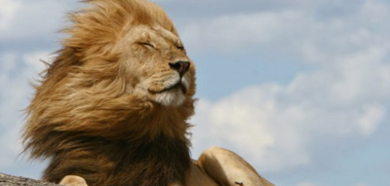

My favorite animal: The Lion
Amazing Facts About the Lion
-
Lions are the only big cats to live in groups, called prides. Prides are close family groups. They work
together to defend territory and hunt.
-
The females in the pride tend to do the majority of the hunting. They work as a group and use
intelligent hunting tactics to catch prey which they would not be able to catch alone as they are faster
than them.
-
Lions enjoy relaxing and lazing around. They spend between 16 and 20 hours each day resting and
sleeping. They have few sweat glands so they wisely tend to conserve their energy by resting during the
day and become more active at night when it is cooler.
